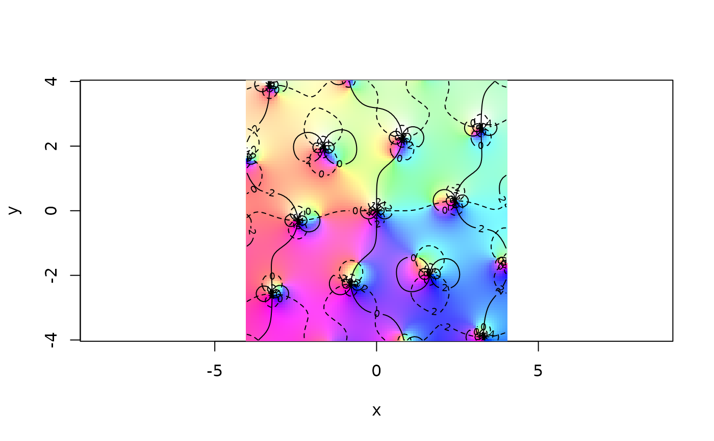

WeierstrassP.RdWeierstrass elliptic function and its derivative, Weierstrass sigma function, and the Weierstrass zeta function
P(z, g=NULL, Omega=NULL, params=NULL, use.fpp=TRUE, give.all.3=FALSE, ...)
Pdash(z, g=NULL, Omega=NULL, params=NULL, use.fpp=TRUE, ...)
sigma(z, g=NULL, Omega=NULL, params=NULL, use.theta=TRUE, ...)
zeta(z, g=NULL, Omega=NULL, params=NULL, use.fpp=TRUE, ...)Primary complex argument
Invariants g=c(g2,g3). Supply exactly one of
(g, Omega, params)
Half periods
Object with class “parameters” (typically
provided by parameters())
Boolean, with default TRUE meaning to calculate
\(\wp(z^C)\) where \(z^C\) is congruent to \(z\)
in the period lattice. The default means that accuracy is greater
for large \(z\) but has the deficiency that slight
discontinuities may appear near parallelogram boundaries
Boolean, with default FALSE meaning to return
\(\wp(z)\) and TRUE meaning to return the other forms given
in equation 18.10.5, p650. Use TRUE to check for accuracy
Boolean, with default TRUE meaning to use
theta function forms, and FALSE meaning to use a Laurent
expansion. Usually, the theta function form is faster, but not
always
Extra parameters passed to theta1() and theta1dash()
R. K. S. Hankin. Introducing Elliptic, an R package for Elliptic and Modular Functions. Journal of Statistical Software, Volume 15, Issue 7. February 2006.
In this package, function sigma() is the Weierstrass sigma
function. For the number theoretic divisor function also known as
“sigma”, see divisor().
## Example 8, p666, RHS:
P(z=0.07 + 0.1i,g=c(10,2))
#> [1] -22.9745-63.05323i
## Example 8, p666, RHS:
P(z=0.1 + 0.03i,g=c(-10,2))
#> [1] 76.58833-50.50379i
## Right answer!
## Compare the Laurent series, which also gives the Right Answer (tm):
P.laurent(z=0.1 + 0.03i,g=c(-10,2))
#> [1] 76.58833-50.50379i
## Now a nice little plot of the zeta function:
x <- seq(from=-4,to=4,len=100)
z <- outer(x,1i*x,"+")
view(x,x,limit(zeta(z,c(1+1i,2-3i))),nlevels=6,scheme=1)

#now figure 18.5, top of p643:
p <- parameters(Omega=c(1+0.1i,1+1i))
#> Warning: Omega supplied not a primitive pair of half periods. Function converting Omega to a primitive pair
n <- 40
f <- function(r,i1,i2=1)seq(from=r+1i*i1, to=r+1i*i2,len=n)
g <- function(i,r1,r2=1)seq(from=1i*i+r1,to=1i*i+2,len=n)
solid.lines <-
c(
f(0.1,0.5),NA,
f(0.2,0.4),NA,
f(0.3,0.3),NA,
f(0.4,0.2),NA,
f(0.5,0.0),NA,
f(0.6,0.0),NA,
f(0.7,0.0),NA,
f(0.8,0.0),NA,
f(0.9,0.0),NA,
f(1.0,0.0)
)
dotted.lines <-
c(
g(0.1,0.5),NA,
g(0.2,0.4),NA,
g(0.3,0.3),NA,
g(0.4,0.2),NA,
g(0.5,0.0),NA,
g(0.6,0.0),NA,
g(0.7,0.0),NA,
g(0.8,0.0),NA,
g(0.9,0.0),NA,
g(1.0,0.0),NA
)
plot(P(z=solid.lines,params=p),xlim=c(-4,4),ylim=c(-6,0),type="l",asp=1)
lines(P(z=dotted.lines,params=p),xlim=c(-4,4),ylim=c(-6,0),type="l",lty=2)